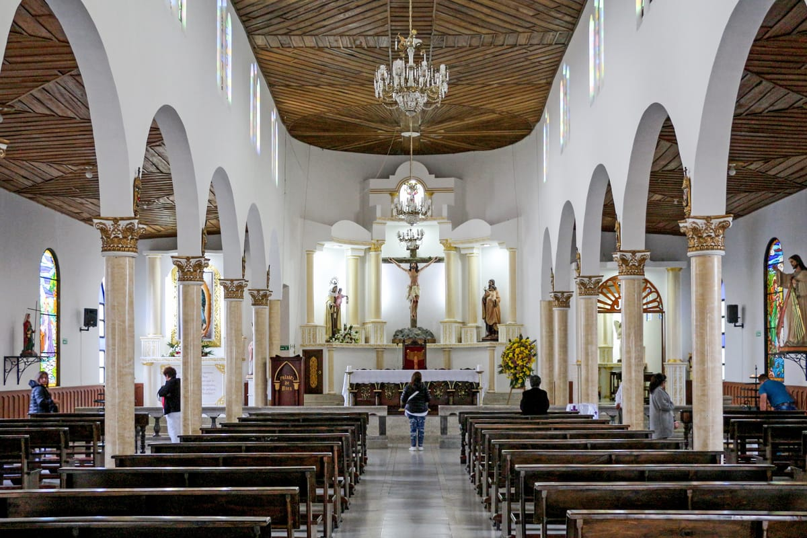
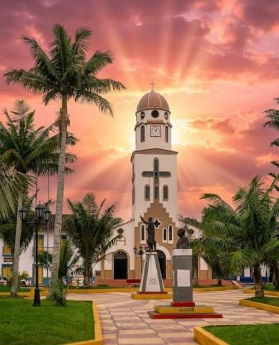
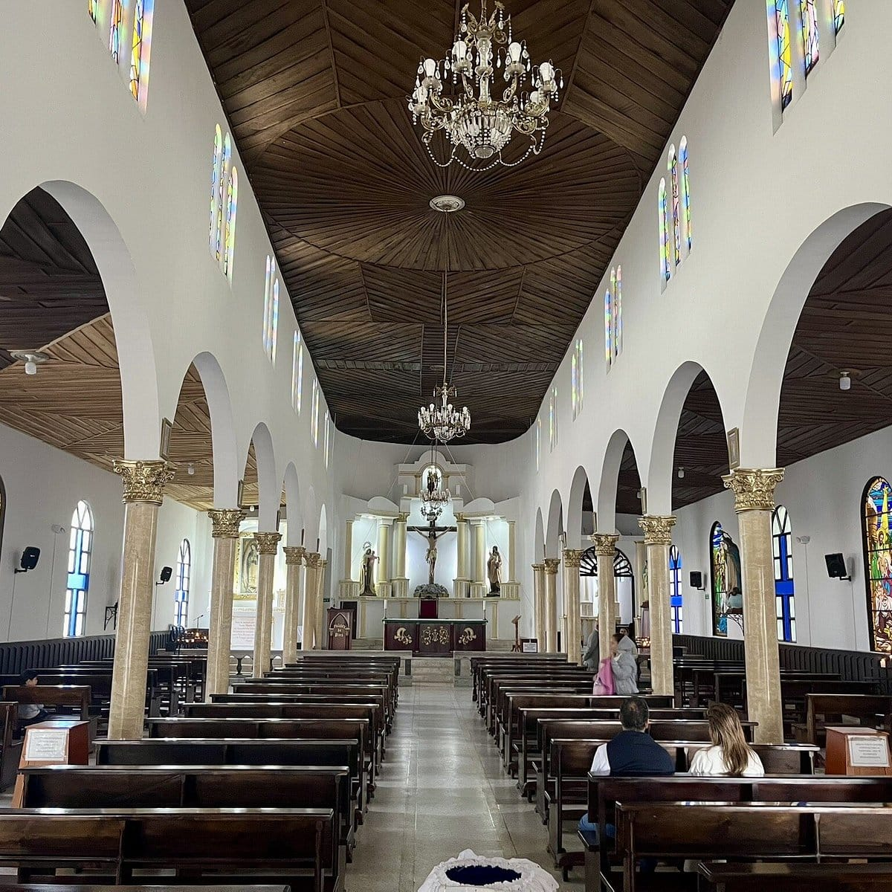
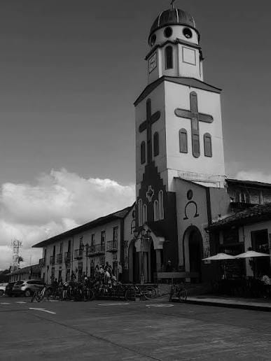

Iglesia de Nuestra Señora del Carmen de Salento
La joya arquitectónica neogótica de Salento: una imponente fachada blanca con vitrales importados de Europa, campanario con vista panorámica y un altar tallado en madera que refleja la fe y la historia del pueblo cafetero más emblemático del Quindío.
Conoce la experiencia
✓ Información verificada en el catálogo local
Construida a principios del siglo XX en estilo neogótico, la Iglesia del Carmen es el punto de referencia más fotogénico de Salento. Su fachada blanca contrasta con las montañas verdes del Valle de Cocora. Los vitrales traídos de Bélgica iluminan el interior con tonos dorados durante la misa del domingo. Las fiestas patronales del 16 de julio transforman la plaza en una celebración de música, flores y tradición.
Galería de imágenes



.jpg)

Antes de confirmar tu visita
¿Cuál es el horario de Iglesia de Nuestra Señora del Carmen de Salento? Horarios de misa variados. Visita exterior libre.
¿Cuánto cuesta? Rango Gratis. Confirma la tarifa final con el local.
¿Cómo reservo? Contacto directo por WhatsApp, sin intermediarios ni comisiones.
Lo que puedes encontrar
Preguntas frecuentes
¿Qué es la Iglesia del Carmen?
Iglesia principal de Salento, ubicada en la Plaza de Bolívar. Construcción colonial, estilo neogótico. Patrona: Nuestra Señora del Carmen.
¿Cuándo celebran?
Fiestas patronales: 16 de julio. Misas: lunes a sábado 7:00 AM, domingo 9:00 AM.
¿Se puede entrar?
Sí, entrada libre. Respeto al culto. Horario: 6:00 AM - 6:00 PM.
¿Qué ver?
Arquitectura neogótica, vitrales, altar principal, campanario. Punto de referencia para orientarse.
¿Dónde está?
Plaza de Bolívar, centro de Salento. Punto de referencia obligatorio.
Qué hacer cerca
Consejos para tu visita
Foto: Foto obligatoria del exterior.
Interior: Interior silencioso.
✓ Información verificada en el catálogo local